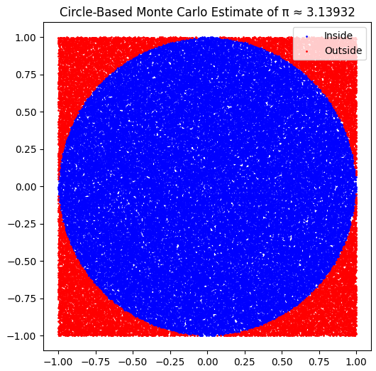

Problem 2: Estimating \(\pi\) Using Monte Carlo Methods
Monte Carlo Methods: Background
Monte Carlo methods originated with Stanislaw Ulam and John von Neumann during nuclear simulations in the 1940s. They rely on random sampling to numerically approximate mathematical constants, integrals, and probabilities.
Part A: Unit Circle in a Square
Theory
Using geometry: - Area of unit circle: \(A_{\text{circle}} = \pi r^2 = \pi\) - Area of square enclosing it: \(A_{\text{square}} = (2r)^2 = 4\)
Thus, $$ \pi \approx 4 \cdot \frac{\text{Points inside circle}}{\text{Total points}} $$

Part B: Buffon’s Needle
Theory
Drop a needle of length \(l\) on parallel lines spaced \(d\) apart. The probability of crossing a line is: $$ P = \frac{2l}{\pi d} $$
So: $$ \pi \approx \frac{2lN}{dC} $$ where \(C\) is the number of crossings among \(N\) trials.
Final Thoughts
- CLT ensures the robustness of sampling in statistics, explaining the central role of the normal distribution.
- Monte Carlo methods demonstrate how randomness can converge on precise mathematical truths.
- These tools are foundational across data science, finance, physics, and AI.
References
- Ross, S. (2014). Introduction to Probability and Statistics for Engineers and Scientists.
- Grimmett & Stirzaker. (2001). Probability and Random Processes.
- Wikipedia: Central Limit Theorem, Buffon’s Needle, Monte Carlo Method.